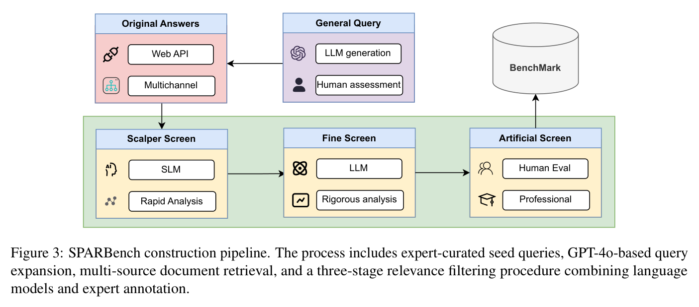
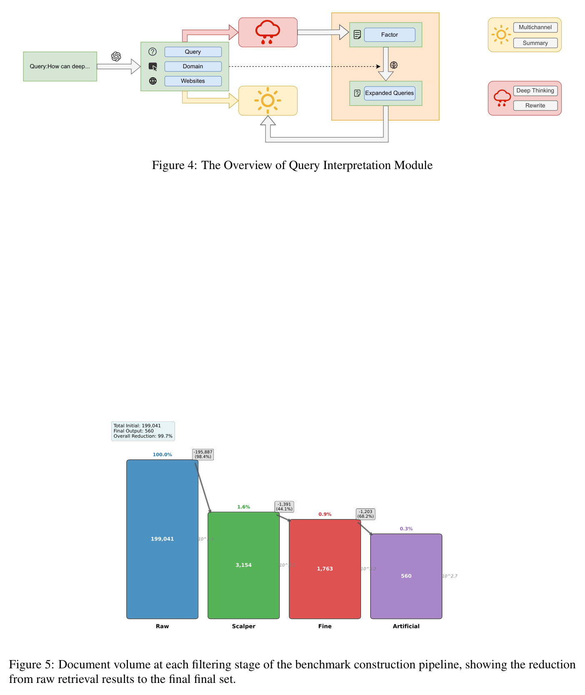
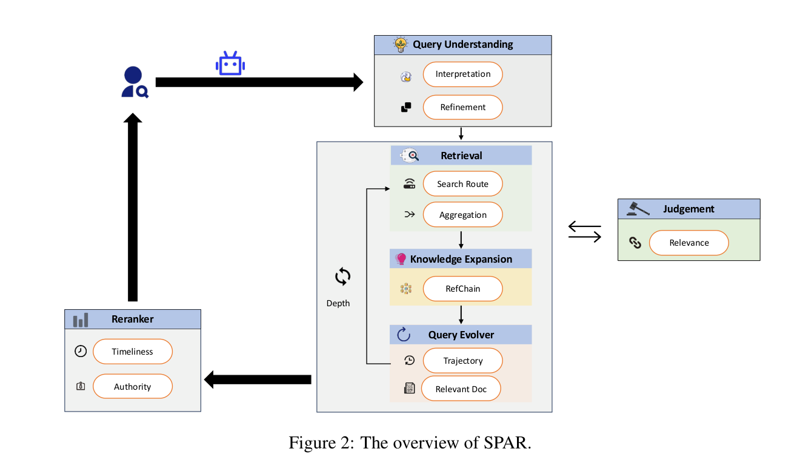
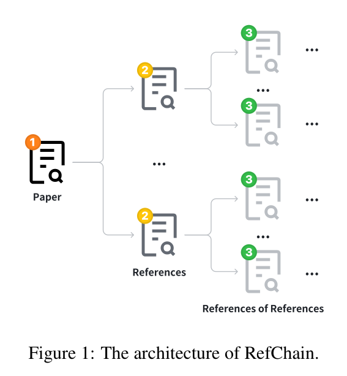
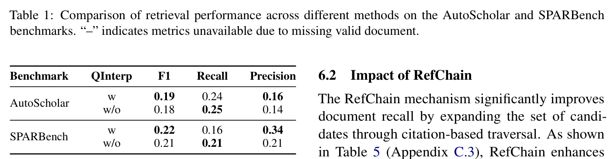

SPAR / SPARBench
50 条专家筛选查询 + 560 篇人工核验文档 —— 标注质量是这条线上最高的，规模是最小的，而且它明确拒绝共享语料。
为什么归档：它是 ScholarQuest Table 1 里仅有的两篇竞品之一（另一篇 PaSa 已在 复杂/PaSa/），也是理解"ScholarQuest 到底新在哪"的必要对照。一篇论文里同时装了系统（SPAR）和 benchmark（SPARBench）。
1 SPARBench：小而精
| 维度 | SPARBench |
|---|---|
| 查询数 | 50（35 CS + 15 生物医学） |
| 金标文档 | 560 篇专家核验，约 12 篇/查询 |
| 查询来源 | 手工整理种子 → GPT-4o 改写扩展 → 专家筛选 |
| 指标 | 文档级 Precision / Recall / F1 + Recall@5 |
| 主题分类学 | 无 |
| 共享语料环境 | 明确不提供（见下） |


它明确拒绝共享语料 —— 这一点常被误读
原文："each retrieval system operates over its own native search source… rather than performing search on a shared benchmark corpus"。也就是说它是有意选择"各系统用自己的数据源"，理由是贴近真实使用。
后果：跨系统数字不可严格归因 —— 赢的可能是数据源而不是 agent 能力。这恰是 AstaBench §1 那句批评所指："it is unclear whether a 'winning' agent has superior AI capabilities or merely access to a more relevant information source."
自承局限 论文自己写了："limited in scale and domain diversity… future work should extend SPARBench to cover additional disciplines and query types." —— 所以 ScholarQuest 批它"small-scale"并不算冤，只是 ScholarQuest 从未给出任何一方的数字。
2 SPAR 系统侧
免训练的学术检索 agent：查询理解 → 多源检索 → 引文探索（RefChain）→ 重排。


[Expand] 同族。
交叉验证 在 ScholarQuest 的第三方评测里，SPAR 的总体成绩是 R@25 0.197 / R@100 0.270 / R@All 0.291，略低于 PaSa（0.201/0.281/0.310），效率上 47.1 次工具调用、515 个候选、R@100/百候选 0.064。
深读程度说明。本页为归档级：图表与关键构建数字经本地 PDF 核对，但未做逐页全文通读与源码审计（对比：复杂/PaSa/ 与 Benchmark/ScholarQuest/ 为深读级）。如需把它当作正式对照基线，建议先补一次全文 + 数据可得性核查。
归档日期：2026-08-03 · 论文版本 v1（2025-07-21）· 图片由本地 PDF 按图注区域裁切。